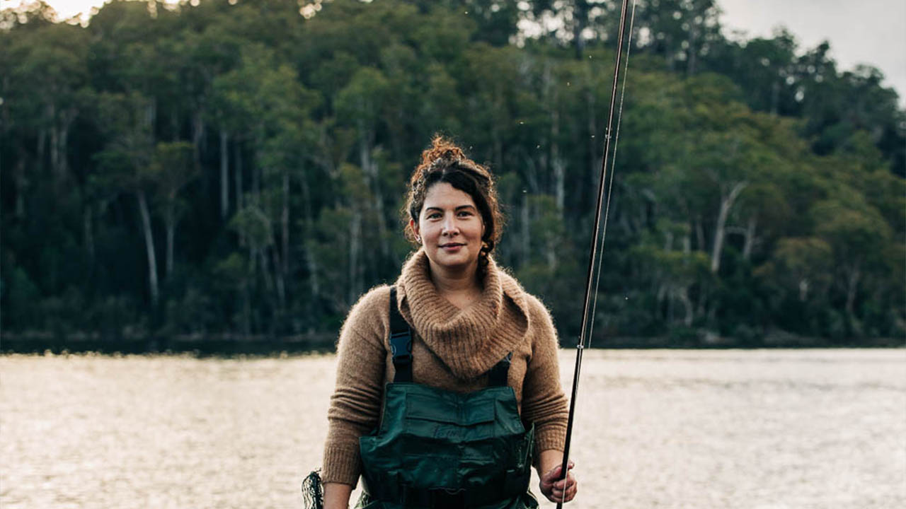
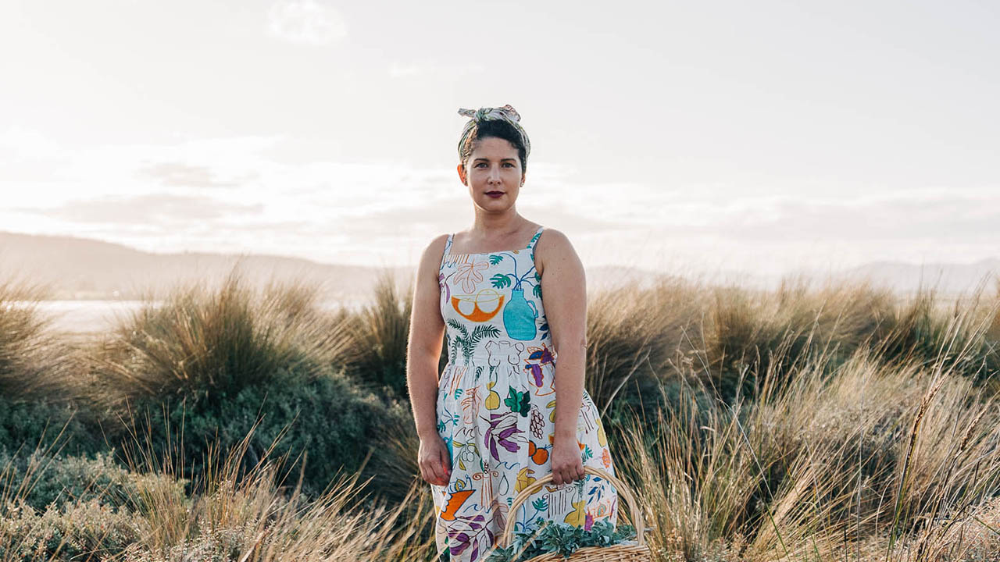

Guest Chef

Meet Analiese Gregory
Analiese Gregory is one of the most talked about and trailblazing young chefs in Australia today, with a string of enviable kitchen credits to her name, including The Ledbury, Michel Bras, Mugaritz and Sydney’s Quay.
Having flirted with returning to France, she instead packed her bags on a whim in 2017 and moved to Tasmania.
Culinary Explorer in the Heart of Tasmania
In 2020, she appeared with chef Gordon Ramsay in an episode of his National Geographic series ‘Uncharted’ as Gordon’s culinary guide to Tasmania, introducing the island’s unique ingredients and food traditions.
She also has her own SBS Food and SBS On Demand TV series ‘A Girl’s Guide to Hunting, Fishing and Wild Cooking’ that follows her cooking and outdoor adventures in Tasmania.
